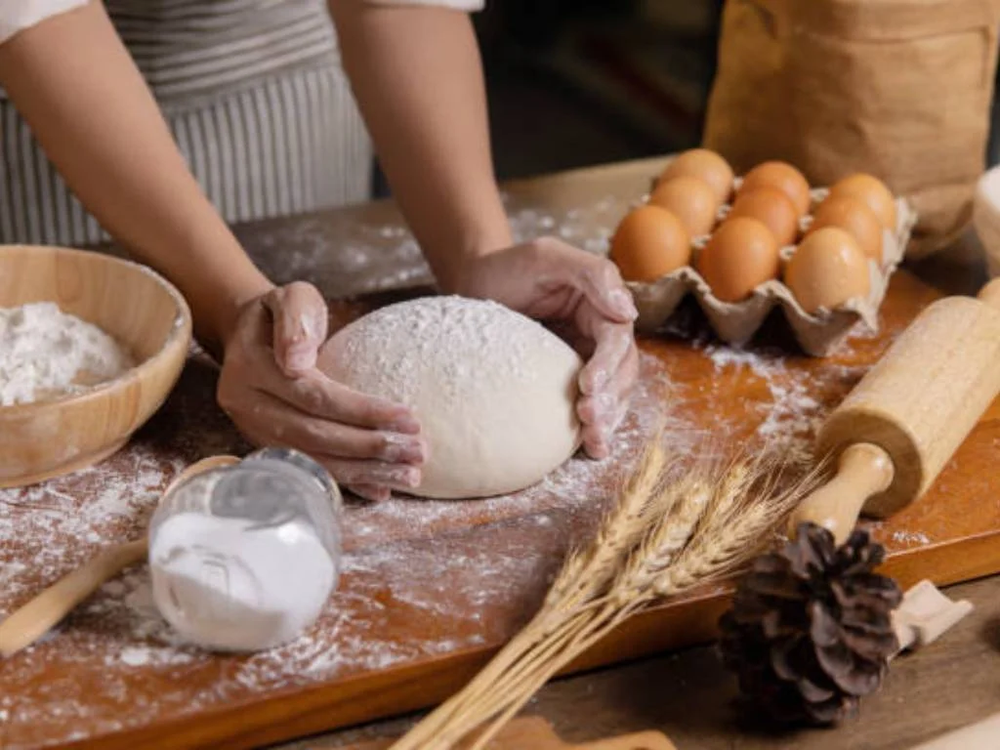
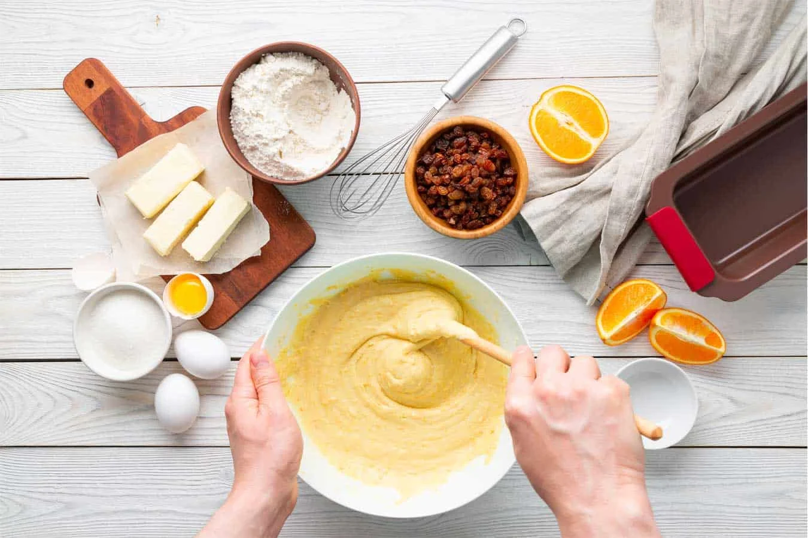

Recipe Content
Title:
Lemon Bars
Description:
These are classic lemon bars featuring a soft butter shortbread crust and a tangy sweet lemon curd filling that’s baked to the perfect consistency. The lemon layer is thick and substantial, not thin or flimsy like most other lemon bar recipes.
Ingredients
- Butter: Melted butter is the base of the shortbread crust.
- Sugar: Sugar sweetens the crust and lemon curd filling layers. Not only this, it works with the eggs to set up the lemon filling. If reduced, the filling will be too wet.
- Flour: Flour is also used in both layers. Like sugar, it gives structure to the lemon filling. These days, I add slightly more flour to the shortbread crust compared to my cookbook version. You can get away with 2 cups, but an extra 2 Tablespoons really helps solidify the foundation of the lemon bars.
- Vanilla Extract: I use 2 teaspoons of vanilla extract in the shortbread crust. Not many lemon bar recipes call for vanilla extract and I promise you it’s my best kept secret.
- Salt: Without salt, the crust would be too sweet.
- Eggs: Eggs are most of the structure. Without them, you have lemon soup!
- Lemon Juice: I highly recommend using lemon juice squeezed from fresh lemons. You can also use another citrus like blood orange, grapefruit, or lime juice.
Instructions:
- Prepare the crust: Mix all of the shortbread crust ingredients together, then press firmly into a 9×13-inch baking pan. Interested in a smaller batch? See my recipe note.
- Pre-bake: Pre-baking the crust guarantees it will hold up under the lemon layer.
- Prepare the filling: Whisk all of the filling ingredients together. No cooking on the stove!
- Bake: Pour the filling on the warm pre-baked crust, then bake for around 20 minutes or until the center is just about set. I slightly increased the baking temperature from my cookbook version. Either temperatures work, but 325°F is preferred.
- Cool: I usually cool the lemon bars for about 1 hour at room temperature, then stick the whole pan in the refrigerator for 1-2 more hours until relatively chilled. They’re wonderful cold and with a dusting of confectioners’ sugar on top!
Source Attribute:
Recipe Source
Imagery



Recipe Website Links
Smitten Kitchen This website is unique because the title for each recipe starts with lowercase. I like the way they made the recipe really stand out compared to the rest of the text, in its own box, so it is easy to scroll and see it. The purple recipe box is pretty yet simple and easy to read.
Joy Food Sunshine The recipe pages on this website feature really bright and classy pictures of each dish. I also like how for the ingredients, they bold the ingredient and don't bold the short description next to each one.
Food 52 I like the way this website has simple slides on the homepage, and each slide is in a different color. In the recipes, I love the cute font choices that are consistent throughout the page.
Non-Recipe Website Links
Aritzia The Aritzia website design has a lot of clean lines and neutrals. It has a modern feel that would make recipes easy to follow and feel clean and upscale.
WashU The WashU website has deign elements that could translate well. I like how they use colors that connect to their brand, and use nice fonts. They also use all caps and a more blocky font for emphasis. I also like the way things are sectioned out using boxes with padding.
St. Louis Zoo Under the "mission" tab, I think the design is easy to read well also being stylish. They mix light blue and tan to create a calm feeling. The font is quite nice as well, and the images of animals help them emphasize their message.